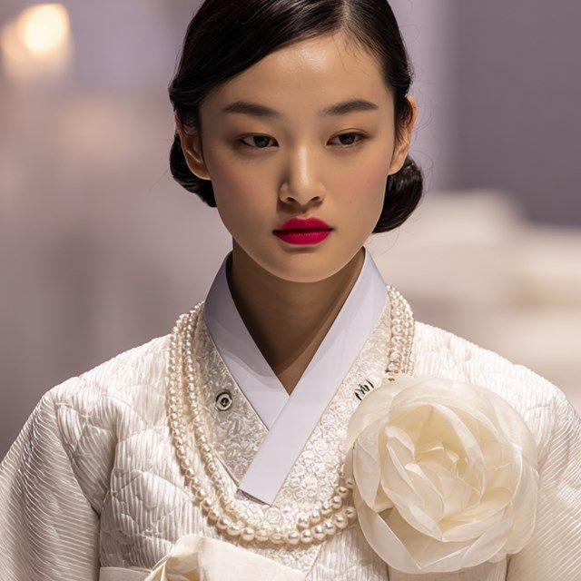

하루뿐인 예식을
끝까지 함께 준비합니다.
플래너는 두 분 대신 발품을 팔고 일정을 챙기는 사람입니다. 무엇을 언제 정해야 하는지, 얼마나 걸리는지, 비용이 얼마인지를 첫 상담에서 전부 말씀드리고 시작합니다.
“찾아오시는 분들은 대부분 이미 한참을 혼자 알아보다 오십니다. 그래서 저는 설명을 길게 합니다. 어떤 순서로 왜 정해야 하는지 아시면 그다음부터는 훨씬 덜 불안하시더군요.”
이대표 대표 플래너
상담 신청부터 예식 당일까지
모든 단계를 담당 플래너가 함께합니다.
식장 계약부터 예식까지 보통 여섯 달에서 아홉 달이 걸립니다.
-
01 첫 상담
예산과 예식 시기, 원하는 분위기를 듣고 준비 일정을 함께 그립니다.
-
02 예식장 투어
조건에 맞는 곳을 세 곳 안팎으로 추려 함께 다니며 보고 정합니다.
-
03 스드메 계약
드레스 · 스튜디오 · 메이크업을 함께 보고 고릅니다. 계약서는 항목별로 확인해 드립니다.
-
04 드레스 피팅 · 촬영
피팅과 리허설 촬영에 플래너가 같이 갑니다. 어울리는 것을 옆에서 봐 드립니다.
-
05 본식 준비
청첩장과 식순, 축가와 혼주 한복까지 남은 일을 목록으로 만들어 하나씩 지웁니다.
-
06 예식 당일
담당 플래너가 아침부터 현장에 있습니다. 순서를 챙기고 두 분은 하루만 보시면 됩니다.
플래너 소개
첫 상담부터 예식 당일까지 같은 플래너가 맡습니다.

유행하는 순서를 그대로 권하지 않습니다.
두 분의 예산과 하루를 먼저 듣고 필요한 것만 말씀드립니다.
- 전체 플래닝
- 예식장
- 예산 조정
- 스몰 웨딩
- 웨딩플래너 1급
- 컨벤션기획사 2급
- 진행한 예식 900건 이상
- 이전 대형 웨딩홀 플래닝팀
- 이전 드레스 부티크 실장
- 다름웨딩 개원
- 호텔 · 컨벤션 예식
- 야외 · 스몰 웨딩
- 예산을 정해 두고 준비하는 예식
드레스는 사진보다 입어 봐야 압니다.
그래서 더 많이, 더 오래 같이 다닙니다.
- 드레스 · 피팅
- 스튜디오 촬영
- 메이크업
- 웨딩플래너 1급
- 컬러리스트 기사
- 진행한 예식 500건 이상
- 이전 드레스 숍 피팅 담당
- 리허설 촬영 동행 다수
- 드레스를 먼저 정하는 예식
- 리허설 촬영을 크게 잡는 예식
화려하게 꾸미는 것보다
당일에 흔들리지 않는 순서를 만드는 일이 먼저입니다.
- 본식 진행
- 스냅 · 영상
- 청첩장 · 식순
- 웨딩플래너 1급
- 이벤트 연출 실무 과정 수료
- 진행한 예식 600건 이상
- 이전 예식 진행 · 사회 전담
- 본식 현장 진행 경험 다수
- 순서가 많은 예식
- 양가 어른이 함께 준비하는 예식
- 스냅 작가리허설 · 본식 사진과 영상
- 헤어 · 메이크업리허설과 본식 당일 담당
- 진행 코디네이터예약 · 비용 · 계약서 안내
진행한 예식
두 분의 허락을 받아 올린 예식 사진입니다. 옆으로 밀면 다음 예식을 보실 수 있습니다.
맡겨 보신 분들의 생생한 후기입니다.
잘한 점만 골라 싣지 않았습니다. 어떤 사정에서 어떻게 준비했는지 그대로 옮겼습니다.
-
예식 날짜가 갑자기 당겨져 급하게 연락드렸는데 그 주에 식장을 세 곳 잡아 주셨습니다. 안 해도 되는 항목을 먼저 알려주셔서 예산보다 비용이 덜 나왔습니다. 계약서를 항목별로 같이 읽어 주신 것도 좋았습니다.
김○○ 님 · 봄 예식 · 전체 플래닝 -
드레스를 고르는 게 제일 어려웠는데, 피팅 때마다 같이 가서 봐 주셨습니다. 제 체형에 맞는 라인을 먼저 짚어 주셔서 고르는 시간이 확 줄었습니다. 수선 일정까지 챙겨 주셨습니다.
이○○ 님 · 가을 예식 · 드레스 · 스냅 -
양가 어른들 의견이 갈려 정하기 어려웠습니다. 가운데서 조율해 주셔서 얼굴 붉히는 일 없이 넘어갔고, 추가 비용이 생기는 항목은 미리 금액을 알려주신 뒤에 진행하셨습니다.
박○○ 님 · 겨울 예식 · 전체 플래닝 -
처음 상담에서 들은 예산과 실제로 쓴 금액이 거의 같았습니다. 식순도 저희와 상의해 정해 주셔서 마음에 듭니다.
정○○ 님 · 여름 예식 · 스몰 웨딩 -
예식 2주 전에 축가가 취소돼 연락드렸더니 다음 날 대안을 세 개 보내주셨습니다. 다시 잡아 주시고 추가 비용은 받지 않으셨습니다. 이런 부분에서 믿음이 갑니다.
최○○ 님 · 봄 예식 · 본식 진행 -
예산이 넉넉하지 않아 어디까지 해야 할지 고민이었는데, 무리해서 권하지 않고 빼도 되는 항목을 그대로 말씀해 주셨습니다. 결국 식장과 스냅에만 쓰고 나머지는 줄였습니다.
한○○ 님 · 가을 예식 · 부분 플래닝
※ 실제로 받은 후기를 옮겨 적은 것으로, 개인정보 보호를 위해 이름은 일부만 표기합니다.
전화로 가장 많이
물어보시는 것들
여기에 없는 내용은 전화로 편하게 물어보셔도 됩니다.
첫 상담이 끝나면 항목별 비용이 적힌 견적서를 드립니다. 꼭 필요한 항목과 빼도 되는 항목을 나눠 표시해 드리고, 그날 결정하지 않으셔도 됩니다.
보통 여섯 달에서 아홉 달을 잡습니다. 식장은 1년 전에도 마감되는 곳이 있어 날짜부터 정하시길 권합니다. 급하시면 석 달 안에도 준비해 드립니다.
가능합니다. 식장만, 스드메만, 본식 진행만 따로 맡기실 수 있습니다. 이미 정하신 것이 있으면 그것부터 확인하고 남은 것만 도와드립니다.
상담은 한 팀에 한 시간 이상 걸려 예약제로 운영합니다. 전화나 상담 신청으로 시간을 잡아 주시면 대기 없이 바로 시작합니다.
건물 지하 주차장 이용 (관리 고객 2시간 무료) 오실 때 차량번호를 알려 주세요.
함께 오셔도 됩니다. 어른들이 궁금해하시는 예단 · 예물과 상견례 순서도 같이 말씀드립니다. 의견이 갈리는 부분은 저희가 가운데서 정리해 드립니다.
담당 플래너가 아침 준비 때부터 예식이 끝날 때까지 현장에 있습니다. 순서와 시간을 챙기고, 사진 촬영과 폐백까지 정리한 뒤에 돌아갑니다.
상담 시간
평일과 주말로 나누어 상담합니다.
예식이 있는 날은 상담이 어려울 수 있습니다.
첫 상담과 계약 상담을 진행합니다. 퇴근 뒤 시간은 자리가 금방 차니 미리 잡아 두시면 좋습니다.
식장 투어와 피팅 동행을 진행합니다. 예식이 겹치는 날이 많아 미리 연락 주시면 일정을 잡아 드립니다.
상담은 예약제입니다. 전화나 상담 신청으로 시간을 잡아 주시면 대기 없이 바로 시작합니다.
성함과 연락처를 남겨주시면 상담 시간을 잡아 드립니다
예식 시기와 생각하시는 예산을 함께 적어주시면 더 정확히 안내드립니다